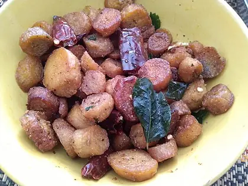

Starters & snacks · Popular in Northern plains and West coast and Deccan
Arbi fry
Arbi fry is made with wild taro corms, a favourite in Northern plains and West coast and Deccan.

How do you make arbi fry?
Boiled taro corms pan-fried with ajwain, chilli and amchur.
Wild ingredients
- Wild taro corms (Colocasia esculenta): in season October to February
Watch the recipe

Video: HomeCookingShow on YouTube